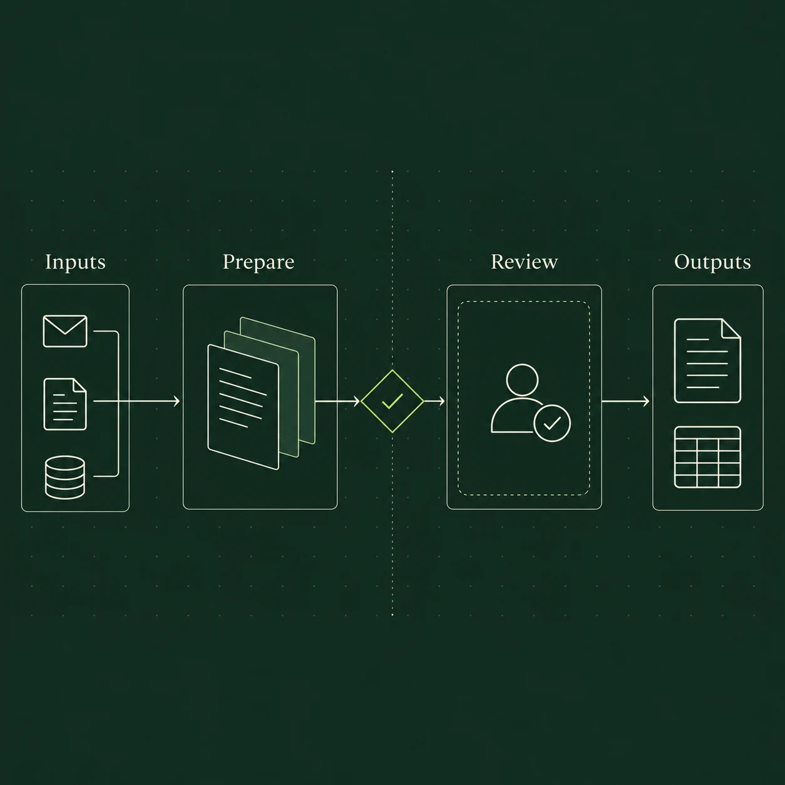

Enquiries & follow-ups
Organise incoming enquiries, prepare replies and keep track of follow-ups. Your team reviews the details.
AI audits, consulting and automation for small and medium-sized businesses. Understand where AI is worth using, get a prioritised plan, and decide what to build.
Illustrative example
A customer sends an enquiry via your website or inbox.
A tailored response is prepared using your information.
You check and approve before anything is sent.
Nothing is sent in this example.
Start with an AI audit to identify and prioritise worthwhile opportunities. Use the roadmap with your team, or engage us separately to build.
Examples of what we can build
Organise incoming enquiries, prepare replies and keep track of follow-ups. Your team reviews the details.
Extract and organise information from documents. Flag missing or uncertain details for a person to check.
Bring agreed data sources together and prepare recurring summaries, so your team can focus on what they mean.
Your tools are part of the audit. We assess what can connect before recommending a build.
Our approach
Start with a clear picture of where AI can help, then decide what to build. Consulting and implementation are scoped separately, with deliverables and fees agreed before each begins.
AI audit & consulting
We assess your workflows, data and tools. We identify where AI could help, where it doesn’t fit, and which opportunities are worth pursuing.
You receive: a prioritised list of AI opportunities and a roadmap for what to do next.
Implementation
A separate engagement to design, build and test the agreed solution. The scope covers integrations, review points and how we’ll assess the results.
You receive: a working workflow, tested against agreed examples.
Handover & support
Your team reviews the results. Documentation, training, rollout and any ongoing support are defined in the proposal, so the next steps are clear.
You receive: the handover materials and support arrangements agreed in your build scope.
The audit is valuable on its own. You can use the roadmap independently; there’s no obligation to engage us for the build.

Consulting that connects to delivery
Good AI starts with the right questions. We assess your processes, data and constraints before recommending what to build.
Not every problem needs AI. Our audit gives you a prioritised view of where it can help, what it would take, and what should stay with a person.
You decide what comes next. Use the roadmap with your team, or engage us separately to build.
Explore our approachA few good questions
You don’t need a technical brief.
A task that takes too much time is a good place to start.
That’s one of the questions we assess in the audit. We review the integrations, permissions and data available in your tools, then explain feasibility and limits before you decide on implementation.
AI auditing and consulting are scoped independently from implementation. For each engagement, we agree the deliverables, fees and timeline before starting, so you know what to expect.
No. The audit produces findings and a practical roadmap you can use independently. You decide whether to take the next steps with your team or engage us separately for implementation.
Before building, we agree what data is needed, which services will process it, who can access it, and any retention requirements. Hosting and provider choices are part of that discussion.
We define the boundaries with you. Routine steps can be automated, while uncertain results, sensitive communications, and important decisions can be routed to a person for approval.
Someone who understands the workflow helps us map it and review the pilot. We agree the time commitment and checkpoints during scoping. A fictional or redacted example is enough for the first conversation.
Ownership, access, handover, and any ongoing costs are set out in the proposal. Training, monitoring, maintenance, and future improvements are agreed as part of the rollout and support arrangements.
A clear scope. Agreed fees. A practical next step.